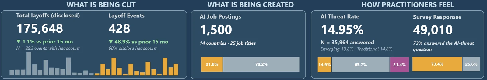

KPI row · Three angles
Fewer layoffs, about the same number of people
In the window, layoff events fell 48.9% against the previous 15 months, to 428, while people laid off fell only 1.1%, to 175,648. Layoffs became less frequent but larger: the ten largest events account for 54.1% of the window's headcount.
On the other two sides, 1,500 AI postings span 14 countries and 25 job titles, and 14.9% of developers say AI threatens their job (21.4% are not sure, 63.7% say no). Developers in emerging roles say so more often than those in traditional ones (19.8% against 14.8%).
Headcount totals are lower bounds: events with no disclosed headcount count as zero, and every headcount tile shows how many events disclose one.